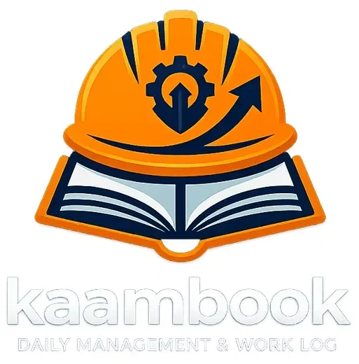
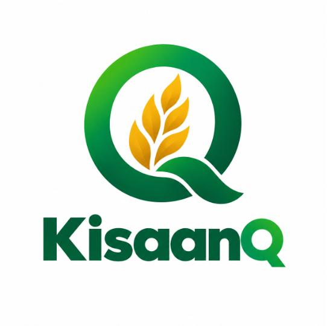

ADENMALIK
Aspiring Innovator | Technology Enthusiast | Public Policy Researcher
“Where Technology Meets Ideas, and Ideas Create Impact.”
(tap to preview, set CONFIG.portrait)
The person behind the ideas
I’m Aden Malik, a first-year B.Tech Computer Science and Artificial Intelligence student at Newton School of Technology, Rishihood University (enrolled 2026).
I’m drawn to the place where technology, public policy, entrepreneurship and innovation overlap. My journey so far has taken me through innovation initiatives, national-level competitions and research, and it keeps teaching me how technology can create meaningful change for society.
I enjoy digging into complex issues, putting ideas into words people can act on, building solutions and working with others.
My ambition is simple to say and hard to do: to become someone who connects technology, governance and innovation to solve real-world problems.
A trail of signals
Judge — Atal Innovation Mission, NITI Aayog
Working as a judge associated with the Atal Innovation Mission, NITI Aayog.
for this achievement
Top 3 — Pitching Competition
Recognised among the top three participants in a pitching competition at DCRUST University.
for this achievement
First white paper written
On India’s Digital Personal Data Protection Act, 2023, and the inclusion of media houses within its framework.
for this achievement
Four-time winner — Atal Innovation Mission
Four-time winner, selected among the Top 8 presenters across India through the Atal Innovation Mission, NITI Aayog.
for this achievement
Good Young Innovator Internship Challenge
Selected as a Good Young Innovator intern through the challenge organised by Scaler School of Technology.
for this achievement
Content management internship
Completed a content management internship with a media startup/agency.
for this achievement
International Entrepreneur Olympiad
Qualified with All India Rank 37 in the olympiad organised by IIT Bombay.
for this achievement
Team Ignitrons — All India Rank 13
Proud member of Team Ignitrons, which secured All India Rank 13 among more than 10,000 participants across India in the National Entrepreneurship Challenge (NEC), IIT Bombay.
Where law, data and the press meet
Journalism and India’s Digital Personal Data Protection Act, 2023
[cover placeholder]
My first white paper, written in 2026, examines the relationship between India’s Digital Personal Data Protection Act, 2023 and journalism, with particular attention to the position of media houses within the evolving data-protection framework.
Should media houses be treated like any other data fiduciary? A comparative study of the world’s top six press-freedom countries.
I’m currently exploring additional public-policy issues and conducting policy-impact analysis.
Research team: Aden Malik (Convener and Founding Member), Priyanshi Choudhary and Kritika Garg. Rishihood University, November 2026.
Read researchShipped: Kaam Book
Kaam Book
Imagine managing multiple construction sites where attendance is recorded in registers, worker payments are tracked manually, and updates come through endless phone calls and WhatsApp messages. It becomes difficult to manage everything efficiently.
What if all these operations could be managed from one platform? That’s exactly what Kaam Book aims to solve.
Kaam Book is a digital construction management platform that helps builders and contractors manage their workers, attendance, payments, materials, expenses and site progress, all in one place. Builders can monitor multiple sites, supervisors can update daily progress, and worker records stay digital.
Live demo ↗
Problem
Attendance in registers, payments tracked by hand, and site updates scattered across calls and WhatsApp.
Approach
One platform for workers, attendance, payments, materials, expenses and site progress.
Vision
Make construction management simpler, smarter and more transparent.
Shipped: KisaanQ
KisaanQ — Smart Queue Management
Farmers often spend hours waiting outside large mills and crop procurement centres to deliver their harvest. KisaanQ is a working prototype designed to replace uncertain queues with planned arrival slots, giving farmers greater control over their time.
Farmers can register, select a preferred procurement slot based on their crop quantity, and check queue conditions before travelling. A live dashboard displays procurement-centre occupancy and estimated waiting times, helping reduce unnecessary trips and congestion.
The prototype also explores voice-assisted registration in Hindi and English, QR-based lot receipts, and accessible notifications to make procurement more transparent and inclusive.
Recognition: Qualified through the college's internal Smart India Hackathon (SIH) selection round for the next stage.
View working prototype ↗
Problem
Unpredictable queues and long waits at crop procurement centres cost farmers valuable time.
Solution
Digital registration, advance booking, queue visibility and arrival planning for crop drop-offs.
Impact goal
Less waiting, smoother procurement flow and a more accessible experience for farmers.
Future projects
More builds are on the way. Add new entries here as they ship.
RaddiWallah
My upcoming startup: a circular economy for cardboard that connects local scrappers, consumers and businesses.
Honest constellation
Beyond the Code
Innovation isn’t only about building technology. It’s about understanding people, communicating ideas clearly and leading others to act on them.
Have an idea worth exploring?
Let’s connect, collaborate and create something meaningful.